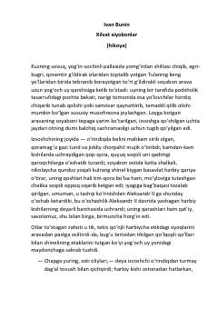

XXKo'p yillar o'tib uchrashgan ikki sobiq oshiqning ta'sirli uchrashuvi haqidagi hikoya.
Ushbu hikoyada ko'p yillar oldin ayrilgan ikki insonning kutilmagan uchrashuvi tasvirlanadi. Nikolay Alekseevich va Nadejda o'rtasidagi o'tmishdagi muhabbat va hayotiy kechinmalar musofirxonadagi samimiy suhbat orqali ochib beriladi.